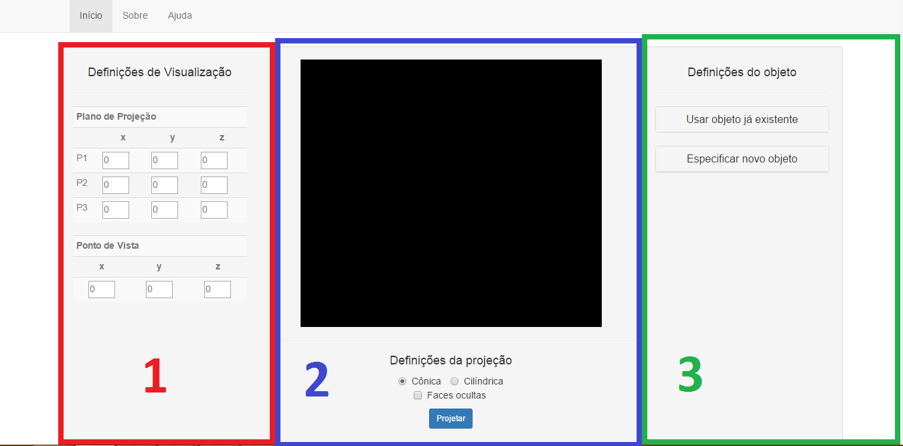

Ajuda para os usuários
Nessa seção, você vai encontrar:
Primeiramente, vamos familiarizá-lo com o sistema. Pode-se afirmar que ele se subdivide em 3 áreas distintas:
- Definições de Visualização
- Ambiente de Visualização e definições de projeção
- Definições do Objeto
Observe a figura a seguir:

A primeira faz referencia às coordenadas do plano de projeção e do ponto de vista do observador. A segunda apresenta a área de
visualização da projeção (em preto) e permite a seleção do tipo de projeção (cônica ou cilíndrica), além de permitir a opção de
não exibir as faces ocultas. A terceira área permite projetar um objeto já pré-existente no sistema, ou então, definir um novo,
por meio da especificação dos vértices e das faces.
O sistema inclui três objetos pré-determinados, a saber:
- Pirâmide de base quadrada;
- Cubo;
- Casa de base retangular com uma porta;
Para selecionar um objeto pré-determinado, faça:
- Na área de "Definições do Objeto", clique em "Usar objeto já existente";
- Clique na caixa de seleção e escolha um dos objetos;
Veja os passos pela figura a seguir.
Ao selecionar um objeto, os demais campos serão automaticamente preenchidos, conforme mostra a figura a seguir.
Para se criar um novo objeto, deverão ser informados os seguinte itens:
- Coordenadas do plano de projeção: Definir as coordenadas de 3 pontos do plano;
- Coordenadas do ponto de vista: Definir as coordenadas do ponto de vista do usuário;
- Tipo de projeção: Definir se a projeção será cônica ou cilíndrica (por padrão, a projeção é cônica);
- Esconder faces ocultas: Definir se a projeção exibirá de modo "wireframe" ou por faces ocultas (por padrão, as faces ocultas são exibidas);
- Especificação de vértices e faces do objeto: Especificar todas as coordenadas dos vértices e quais estão contidos em cada face;
A imagem a seguir exibe onde tais itens podem ser informados.
Com relação ao item 5, ao se clicar no botão "Especificar Novo Objeto", primeiramente pede-se para que se informe a quantidade de vértices e
a quantidade de faces do objeto. Utilize as setas do campo de preenchimento para informar o valor. Especificado esses dois itens, abaixo desse campo aparecerão duas tabelas:
uma para preenchimento das coordenadas dos vértices e uma para informar quais vértices fazem parte da determinada face.
Atenção! É muito importante
que para especificação dos vértices em determinada face, siga-se a
regra da mão direita! Dessa maneira, é garantido que não haverá inversões na projeção do objeto.
Na especificação dos vértices, separe-os por um espaço simples. Ao terminar, pressione o botão "Projetar". O resultado final será a projeção no ambiente de visualização, conforme a imagem a seguir.
É possível "movimentar" o ponto de vista de visualização por meio das teclas W, A, S, D. Eis suas funções:
- W: Aumenta em 1 unidade o eixo Y;
- S: Diminui em 1 unidade o eixo Y;
- D: Aumenta em 1 unidade o eixo X;
- A: Diminui em 1 unidade o eixo X;
Ao digitar uma dessas teclas, a projeção já se altera automaticamente, não sendo necessário clicar no botão "Projetar" novamente.
Caso queira alterar outras propriedades, como por exemplo, as coordenadas do plano de projeção, ou modificar a projeção de cônica para cilíndrica, deve-se sempre, após a alteração, clicar no botão "Projetar" para que a alteração surta efeito!